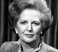

“Demir Leydi” lakaplı Margaret Thatcher (1925–) İngiltere’nin ilk kadın başbakanıdır. 20. yy’ın son döneminde muhafazakar politikanın simgesi haline gelmiştir. ABD başkanı Ronald Reagan’ın (1911–2004) ideolojik bir müttefikidir. Sovyetler Birliği’ne karşı katı bir tutum izlemiştir. Devlet teşekküllerini özelleştirmiş ve sendikalara karşı ülkenin izlemesi gereken ekonomik politikalar hakkında uzun soluklu bir savaş vermiştir.

Thatcher, Lincolnshire’daki Grantham’da orta sınıf bir ailenin çocuğu olarak dünyaya geldi. Babası bakkaldı. Oxford’dan kimya eğitimi alarak mezun oldu. Kısa bir süre için bir plastik firmasında çalıştı. 1951 yılında bir iş adamı ve II. Dünya Savaşı gazisi olan Denis Thatcher (1915–2003) ile evlendi. Çiftin iki çocukları oldu.
1950 yılında muhafazakar saflardan meclise girmek için yarıştı. İlk iki kampanyasında açık ara farkla başarısız oldu. Sonunda 1959 yılında meclise girdi ve parti içinde hızla yükselmeye başladı. 1975 yılında partinin lideri oldu. 1979 yılındaki genel seçimlerde başbakanlığa adaylığını koydu.
Seçimler yüksek enflasyon, yüksek faiz oranları ve yüksek işsizlik koşullarında yapılmıştı. Thatcher ulusun dertlerinden dolayı İşçi Partisi’nin sosyalist politikalarını sorumlu tuttu. Ülke ekonomisinde köklü değişiklik sözü verdi. Gelir vergisini düşürecek, girişimcileri destekleyecek, sendikaların gücünü kıracaktı. Küçük bir oy farkıyla İşçi Partili Başbakan James Callaghan’ı (1912–2005) yenilgiye uğrattı.
Görevdeyken uzlaşmaz tavrıyla dikkat çekti. Otoriter bir yönetim anlayışıyla hareket ediyordu. 1983 ve 1987 yıllarında önemli bir oy oranıyla seçimleri kazandı. Güney Atlantik’te İngiltere’ye ait Falkland Adaları için 1982 yılında Arjantin’e kısa süren bir savaş açtı.
1990 yılında muhafazakarlar tarafından görevden alındı. Yönetim stili ve Avrupa politikasına aykırı düşen yaklaşımları sorun yaratmaya başlamıştı. 1997 yılında İşçi Partisi parlamentoda çoğunluğu sağladı. Ancak yeni hükümet Thatcher’ın refomlarından önemli bir bölümünü devam ettirdi. Kamuoyu yoklamaları onun 20. yy’ın en çok saygı duyulan İngiltere liderleri arasında olduğunu göstermektedir.
Ek Bilgiler
1- Thatcher’ın 11 yıl ve 209 gün süren başbakanlık dönemi, modern İngiltere tarihindeki en uzun örnektir. 1812-1827 yılları arasında görevde kalan “Earl of Liverpool”dan (1770–1828) beri kimse bu kadar uzun süre görevde kalmamıştır.
2- Kraliçe 2. Elizabeth’ın (1926-) Thatcher ile arası iyi değildi. Soğuk bir ilişkileri olduğu söyleniyordu. Kraliçe, buna rağmen Thatcher görevden ayrıldıktan sonra onu Lordlar Kamarası’na aldı ve ona Kesteven Baronesi unvanını verdi.
3- Thatcher’ın oğlu Mark 2004 yılında Güney Afrika’da tutuklandı. Petrol zengini Afrika ülkesi Ekvator Ginesi’nde bir darbe organize etmekle suçlanıyordu. Suçunu itiraf etti ve cezası ertelendi. Kısa süre içinde İngiltere’ye iade edildi.